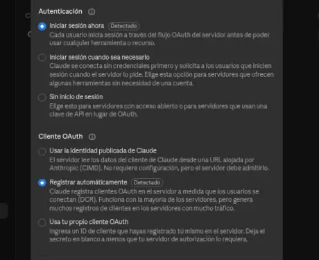
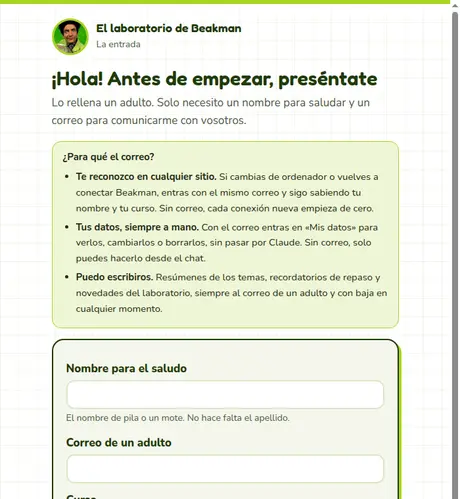
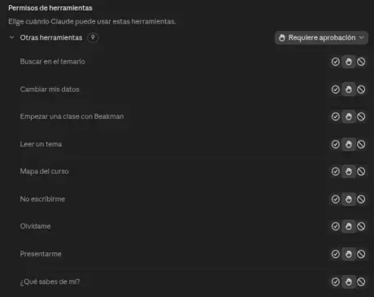

Empieza aquí
Beakman en un minuto
Tres pasos y a estudiar. Hazlos con tu hija o tu hijo al lado: Claude es para mayores de 18, así que lo pone en marcha un adulto.
1Conecta Beakman en Claude
En claude.ai, ve a Ajustes → Conectores → Agregar conector personalizado. Escribe:
Claude marca solo «Iniciar sesión ahora» y «Registrar automáticamente». Déjalo así, pulsa Agregar y luego Conectar.

2Preséntate
Se abre la página de Beakman. Hay dos caminos:
- Entrar al laboratorio: un nombre para saludar, tu correo, el curso y la comunidad. Te llega un correo: lo confirmas y Claude se conecta solo.
- Entrar sin datos: un clic. Beakman no sabrá vuestro nombre ni podrá escribiros.
¿Por qué dar el correo? Beakman te reconoce aunque cambies de ordenador, puedes ver y borrar tus datos en Mis datos, y os puede escribir. Lo cuenta la guía.

3Prepara un proyecto «Beakman»
En Claude, ve a Proyectos → Nuevo proyecto, llámalo Beakman y pega esto en sus instrucciones, con vuestro curso y vuestra comunidad:
Así cada chat del proyecto empieza ya con Beakman, sin tener que decírselo.
Y para que Claude no pida permiso a cada rato: en Ajustes → Conectores → beakman, pon todo en Permitir siempre y deja Requiere aprobación solo en Cambiar mis datos, Presentarme, No escribirme y Olvídame.

Y ahora, a estudiar
Abre un chat en el proyecto y prueba con una de estas:
- Quiero estudiar historia con Beakman.
- Explícame este tema desde el principio.
- Hazme preguntas de una en una y no me des la respuesta hasta que lo intente.
- Ponme un examen de 5 preguntas y corrígemelo.
- Ayúdame con este ejercicio sin darme la solución.
- ¿Qué sabe Beakman de mí?
¿Algo no sale? La guía de uso lo cuenta todo con calma, y las preguntas frecuentes resuelven lo habitual. Si no, escríbenos a beakman@kademy.net.